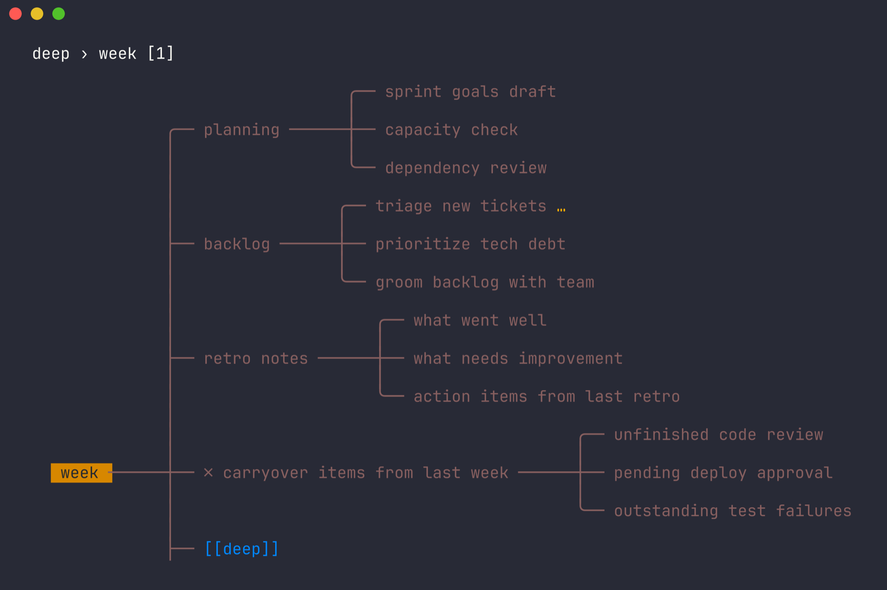
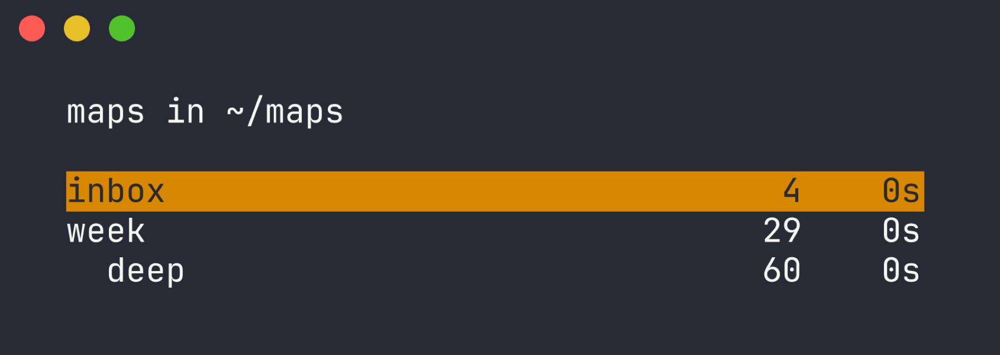
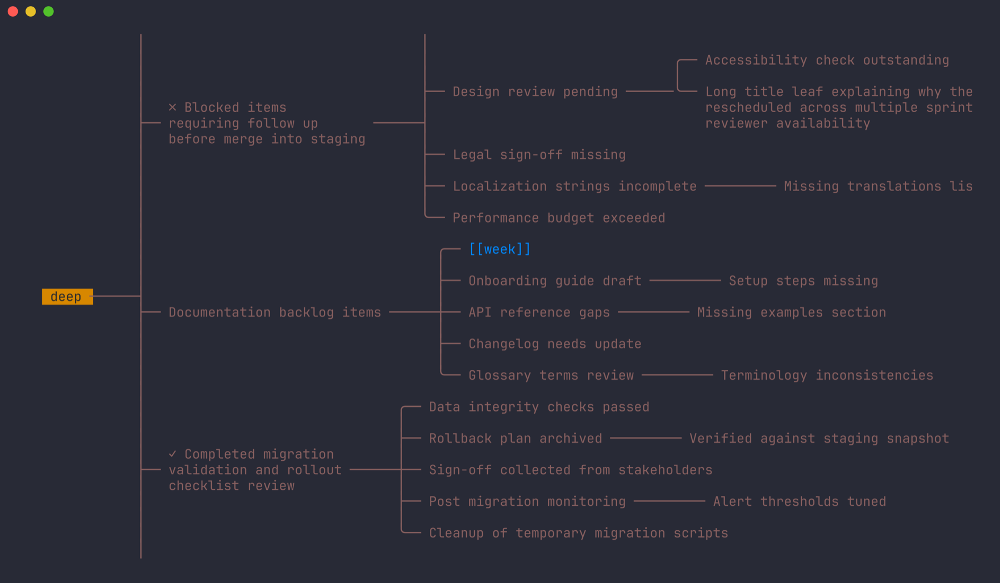
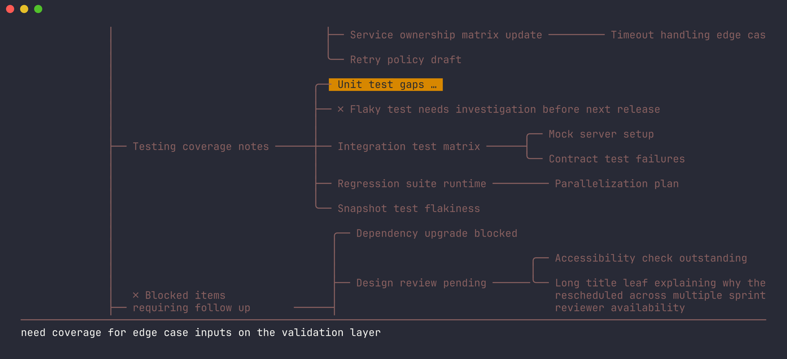
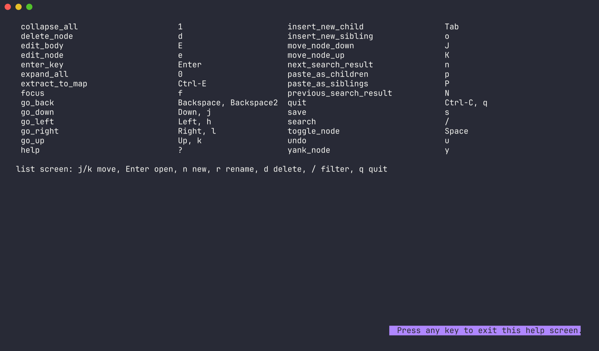

The list
hmx with no arguments opens your map folder. Node count and age per map. Maps linked from another map are indented under it.
/ filters by name, then by content. n new, r rename (rewrites inbound links), d delete.
hmx is a keyboard-driven mind mapper. Every map is a tab-indented text file. Maps link to each other. A subtree can become its own map. Nothing else is stored.

A Go port of h-m-m that adds the things one map cannot do.
A list screen shows every .hmm in your map folder as a tree, nested by who links to whom. inbox is always on top.
[[map]] or [[map#node]] in a node title. Enter follows it, Backspace comes back. A breadcrumb shows where you are.
Ctrl-E moves the node and its children into a new map and leaves a link behind. Big maps stay small.
A node can carry a few lines of notes. E opens them in your editor; they show in a pane at the bottom while the node is selected.
Tabs for depth, one node per line, > for body lines. No ids, no index, no database. Sync with git or anything that moves files.
[[task:uuid]] renders as ☐ or ☑, red when overdue. Enter on it opens task info.
Screens from the test fixtures, captured in a 120-column terminal.
hmx with no arguments opens your map folder. Node count and age per map. Maps linked from another map are indented under it.
/ filters by name, then by content. n new, r rename (rewrites inbound links), d delete.

The same layout engine as h-m-m, ported function by function and checked byte for byte against the original. Long titles wrap. 0 expands everything, 1 collapses everything, f focuses one branch.

A node with notes shows … after its title and a pane at the bottom with the text. Edit with E in $EDITOR.

? lists every action and its key. There are 24 keys on the map and 7 on the list. Rebind any of them with bind<key> = action in the config file.

Those are good tools. hmx is for people who live in a terminal and want their maps in git.
| Whimsical, Miro, MindMeister | Browser canvas, mouse first, your data on their servers. hmx is offline, keyboard only, and the file is yours. |
| XMind, MindNode, FreeMind | Desktop apps with their own XML or binary format. hmx uses tab-indented text you can read in cat, grep, diff, and edit in any editor. |
| Obsidian canvas, Logseq | Great outliners, heavy apps. hmx is one 5 MB binary that starts in milliseconds and does one thing: trees with links between them. |
| h-m-m | The original. hmx keeps its layout and keys, drops PHP for Go, and adds the list screen, cross-map links, extract, bodies, and Taskwarrior. |
Works anywhere a terminal works: over ssh, inside tmux, on a Raspberry Pi. Pairs with vim, Taskwarrior, and git.
Needs Go 1.26 or newer. The binary lands in $(go env GOPATH)/bin.
# from the module proxy go install github.com/samuellawrentz/hmx@latest # or from source git clone https://github.com/samuellawrentz/hmx cd hmx && go build -o hmx . # run hmx # list of maps in your map folder hmx notes.hmm # open one file
Config lives in ~/.config/hmx/config, one key = value per line. Any key can also come from the environment as hmx_<key> or the command line as --key=value.
map_dir = ~/maps
# rebind: bind<key> = action
bindx = expand_all
Map screen. Arrow keys work everywhere h j k l do.
| h j k l | move |
| Space | collapse / expand node |
| 0 / 1 | expand all / collapse all |
| f | focus: collapse others, center |
| Enter | follow link, else new sibling |
| Backspace | back to previous map |
| o / Tab | new sibling / new child |
| e / E | edit title / edit body |
| d y p P | cut, yank, paste as children, paste as siblings |
| J / K | move node down / up |
| Ctrl-E | extract subtree to its own map |
| / n N | search, next, previous |
| u | undo |
| s | save |
| q | back to list, saves if modified |
| ? | help |
| Ctrl-C | quit |
Tabs for depth. One node per line. Body lines start with > under their node. Links are plain text in the title.
week planning sprint goals draft capacity check backlog triage new tickets > ask for repro steps before assigning [[deep]] [[deep#Retry policy draft]] release checklist [[task:3f9a2c1e]]